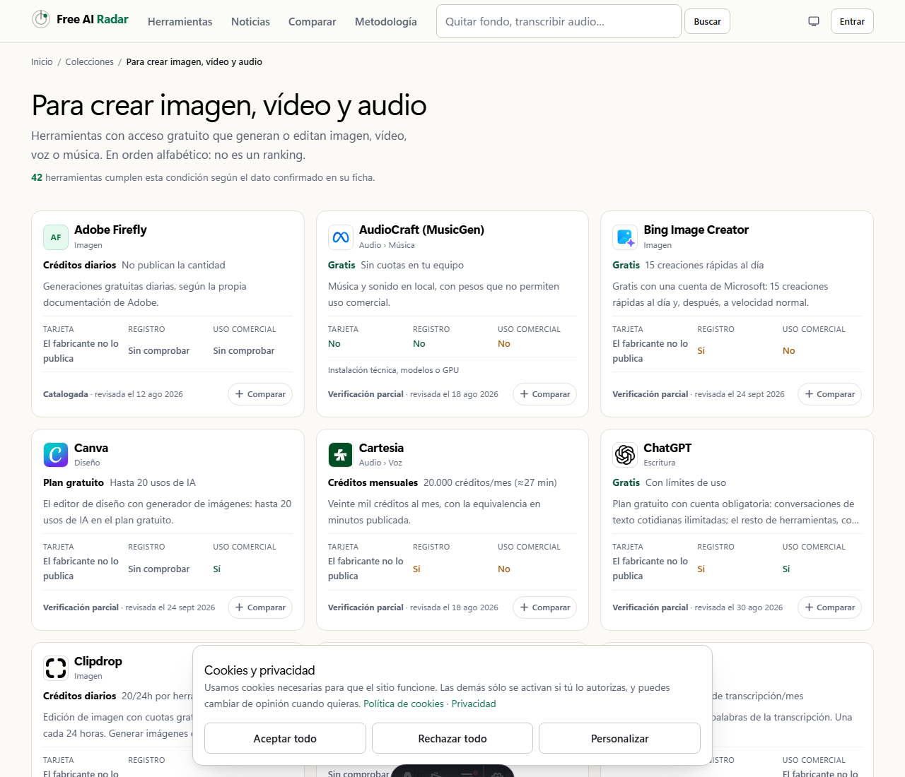

Revisión 2 · para aprobación visual · no publicada
Piloto calidad-precio
Murf, ElevenLabs, Runway y Canva, con las cinco decisiones del 27 de octubre. Los datos son de las páginas oficiales leídas el 27 de octubre de 2026; las 15 citas coinciden literalmente con el texto de cada página.
Cómo se distingue cada dato
Ningún dato se distingue sólo por el color: cada celda lleva su etiqueta.
✓ VerificadoLo dice el fabricante. Cita literal, enlace y fecha.
= Cálculo nuestroUna operación con cifras verificadas. Se enseñan la operación y los supuestos.
◆ Probado por nosotrosUna prueba editorial propia, con el prompt publicado. Hoy no hay ninguna en estas cuatro.
? No lo publicaEl fabricante no lo dice, o se contradice. No lo deducimos.
Precios. Van en la moneda del fabricante, sin convertir. «Mensual» es pagar mes a mes. «Anual» es el precio mensual equivalente cuando se paga el año entero, seguido del total anual. Si el fabricante no publica ese total, lo calculamos y lo marcamos como cálculo.
1 · Bloque «¿Merece la pena pagar?» en la ficha
Va debajo de «Los límites reales». Compara el plan gratuito con el primer plan de pago útil, es decir, el primero que desbloquea lo que el gratis no permite. No puntúa ni recomienda: enseña la diferencia.
Murf AI
Voz · estudio web
¿Merece la pena pagar?
El plan gratuito sirve para escuchar las voces: no deja descargar el audio ni usarlo comercialmente. El primer plan que permite las dos cosas es Creator.
Gratis
Creator
Precio
0 $✓ Verificado
Mensual
29 $/mes
Anual
19 $/mes equivalentes · 228 $ al año
✓ Verificado
Voz incluida
10 minutos✓ Verificado
Mensual: 2 h al mes · Anual: 24 h al año✓ Verificado
Descargas
No✓ Verificado
Ilimitadas✓ Verificado
Uso comercial
No✓ Verificado
Sí («Commercial Rights»)✓ Verificado
Otras diferencias
10 proyectos✓ Verificado
100 proyectos · más de 200 voces · integración con Canva✓ Verificado
Precio por minuto de la cuota
—
Mensual: 0,24 $ (29 $ ÷ 120 min) · Anual: 0,16 $ (228 $ ÷ 1.440 min)= Cálculo nuestroSupone que gastas toda la cuota. No consta si las regeneraciones descuentan tiempo.
Tarjeta para empezar
No✓ Verificado
—
Impuestos incluidos
? No lo publicaLa pregunta está en sus FAQ, plegada; no la hemos leído.
«Business License»
Sólo aparece desde el plan Business. ? No explica qué añade
◆ Probado por nosotrosTodavía no. Sin una prueba propia no decimos nada de cómo suena.
Si el enlace de pago fuera de afiliación, se diría aquí, junto al botón. No cambia ninguna celda de este bloque.
Fuentes (3)
Free · Get started. No Credit Card required · $0 / month · 10 Projects · 10 minutes of Voice Generation · 1 Editor · Everything in Business Plan (No Downloads) · No Commercial Rights — murf.ai/pricing, pestaña Studio, 27 oct 2026
El plan gratuito da 10.000 créditos al mes, sólo para uso personal. Starter añade la licencia comercial, la clonación instantánea de voz y el triple de créditos.
Gratis
Starter
Precio
0 $✓ Verificado
Mensual
6 $/mes
Anual
5 $/mes equivalentes
✓ VerificadoTotal anual: 60 $ = Cálculo nuestro(5 $ × 12; la página no publica el total)Hasta el 1 de noviembre, el primer mes cuesta 1 $. Es una oferta temporal y no entra en ningún cálculo.
Créditos
10.000 al mes✓ Verificado
30.000 al mes✓ Verificado
Minutos de voz (estimación del fabricante)
~10 al mes✓ Verificado
~30 al mes✓ VerificadoEl «~» es suyo: es una estimación, no una cuota. Lo que se gasta son créditos.
Uso comercial
No (✗ en su tabla)✓ Verificado
Sí («Commercial License»)✓ Verificado
Otras diferencias
3 proyectos en Studio✓ Verificado
Clonación instantánea · 20 proyectos · Dubbing Studio · uso comercial de la música✓ Verificado
Precio por minuto estimado
—
Mensual: ~0,20 $ (6 $ ÷ ~30 min) · Anual: ~0,17 $ (5 $ ÷ ~30 min)= Cálculo nuestroHereda la estimación del fabricante: si un modelo o un texto gasta más créditos, sale más caro.
Tarjeta para empezar
No✓ Verificado
—
Impuestos incluidos
No: Prices exclude all taxes, levies and duties.✓ Verificado
◆ Probado por nosotrosTodavía no.
Fuentes (5)
Free · $0 · per month · 3 Projects in Studio · 10k credits · per month — elevenlabs.io/pricing, 27 oct 2026
Starter · Until Nov 1 · $6 First month 83% off · $1 · per month · Everything in free, plus · Commercial License · Instant Voice Cloning · 20 Projects in Studio · Music commercial use · Dubbing Studio · Image & Video · 30k credits · per month — ídem, mensual
Prices exclude all taxes, levies and duties. — ídem
Tabla «Compare plans»: Minutes included ~10 / ~30; Commercial use ✗ / ✓. Los iconos no llevan texto: se leyeron en una captura de pantalla.
Runway
Vídeo
¿Merece la pena pagar?
El plan gratuito son 125 créditos una sola vez, y sus vídeos llevan marca de agua. Standard da 625 créditos al mes, todos los modelos y vídeo sin marca de agua.
Gratis
Standard
Precio
0 $✓ Verificado
Mensual
15 $/mes
Anual
12 $/mes equivalentes
✓ VerificadoTotal anual: 144 $ = Cálculo nuestro(12 $ × 12; cuadra con su «Save $36/year»)
Créditos
125, una sola vez; no se renuevan✓ Verificado
625 al mes = 52 s de Gen-4.5, 104 s de Gen-4 Turbo o 78 imágenes Gen-4✓ VerificadoLa equivalencia es suya.
Modelos
«Una selección»; no dice cuáles✓ Verificado
Todos los de vídeo e imagen✓ Verificado
Marca de agua
Sí, en todos los vídeos✓ Verificado
No («No watermarks»)✓ Verificado
Uso comercial
Sus términos no lo restringen en ningún plan✓ Verificado
Precio por segundo de vídeo
—
Sólo Gen-4.5. Mensual: 0,29 $/s (15 $ ÷ 52 s) · Anual: 0,23 $/s (12 $ ÷ 52 s)= Cálculo nuestroOtro modelo cuesta otra cosa. Para el plan gratuito no se calcula, porque no consta que incluya Gen-4.5.
Impuestos incluidos
? No lo publica
Si hace falta tarjeta para el plan gratuito no se publica: sus páginas se contradicen.
◆ Probado por nosotrosTodavía no.
Fuentes (4)
Free · $0 · /month · 125 credits · 125 one-time credits to explore Runway's AI tools. · A selection of generative creative models to test concepts · 5GB asset storage — runway.com/pricing, 27 oct 2026
All videos generated on a Free plan feature a Runway watermark. — help.runwayml.com, «Free plan details», 27 oct 2026
Standard · $15 · /month · 625 credits · 625 credits monthly = 52s of Gen-4.5, 104s of Gen-4 Turbo, or 78 Gen-4 Images (1080p). · Access to all AI video & image models · Up to 3 projects · No watermarks · 4K upscaling · 20GB storage — runway.com/pricing, mensual
Standard · Billed annually. Save $36/year. · $15 · $12 · /month — ídem, anual
Canva
Diseño
¿Merece la pena pagar?
El plan gratuito cubre el editor, 1,6 millones de plantillas y hasta 20 usos de IA. Pro añade el contenido premium, herramientas como quitar fondos y 10 veces más IA.
Gratis
Pro
Precio
0 €✓ Verificado
Mensual
12 €/mes
Anual
110 € al año
✓ VerificadoEquivalente mensual: 9,17 € = Cálculo nuestro(110 € ÷ 12)Canva enseña euros a quien entra desde España; es su precio para este público.
IA
Hasta 20 usos Standard o Premium✓ Verificado
«10x more AI than Canva Free»✓ Verificado
Cada cuánto se renuevan los 20 usos
? No lo publica
Contenido
1,6 M de plantillas · 5 GB✓ Verificado
3,6 M de plantillas (premium incluidas) · 141 M de recursos premium · 5 kits de marca · 100 GB✓ Verificado
Herramientas
—
Cambiar tamaño, traducir, quitar fondo y más, con límites de uso justo✓ Verificado
Uso comercial de imágenes de IA
Sí, en los dos planes✓ Verificado
Precio por unidad
? Sin unidad comparableCanva dice que sus herramientas use your shared AI allowance at different rates. Un «precio por uso» sería inventado.
Marca de agua · tarjeta · impuestos
? No lo publica
◆ Probado por nosotrosTodavía no.
Fuentes (4)
Free · € · 0 · /year for one person · 1.6M+ templates to start fast · 5GB of cloud storage · AI usage · Up to 20 Standard or Premium AI uses^ — canva.com/pricing, 27 oct 2026
Pro · € · 12 · /month for one person · Start a free trial — ídem, mensual
Pro · € · 110 · /year for one person · AI tools (resize, translate, remove background, and more)+ · … · 10x more AI than Canva Free (Premium or Ultra AI)^ — ídem, anual
^Standard, Premium, and Ultra AI tools use your shared AI allowance at different rates. — ídem
2 · Comparación dentro de una misma función
Sólo se comparan productos que resuelven la misma necesidad, con la misma unidad y los mismos derechos. Si no hay equivalencia válida, la comparación no se hace. No dice cuál es mejor: eso pide una prueba propia.
Voz para publicar: el primer plan con derechos comerciales
La necesidad es generar locuciones que puedas descargar y usar en un trabajo comercial. En estas dos herramientas ningún plan gratuito lo permite, así que se compara el primer plan que sí lo hace.
ElevenLabs · Starter
Murf · Creator
Mensual
6 $/mes
29 $/mes
Anual
5 $/mes equivalentes · 60 $ al año = Cálculo
19 $/mes equivalentes · 228 $ al año
Voz al mes
~30 min: estimación del fabricante
120 min: cuota (en anual, 24 h al año)
Precio por minuto, mensual = Cálculo
~0,20 $
0,24 $
Precio por minuto, anual = Cálculo
~0,17 $
0,16 $
Uso comercial
Sí
Sí
Si necesitas más
Minuto extra ~0,20 $
? No lo publica
Calidad de la voz
◆ Sin prueba propiaNo comparamos la calidad hasta escuchar las dos con el mismo texto.
Supuestos del cálculo por minuto: no es una equivalencia garantizada.
Los minutos de ElevenLabs son una estimación suya («~»). Lo que se gasta son créditos, que dependen del modelo y del texto.
Los minutos de Murf son una cuota de «tiempo de generación de voz». No consta si las regeneraciones la descuentan.
El cálculo supone que gastas todo lo incluido. Si usas menos, el precio por minuto sube en los dos.
Lo que dicen las cifras, sin más. El plan de entrada de ElevenLabs cuesta menos al mes (6 $ frente a 29 $). El de Murf incluye más minutos (120 frente a ~30). Con esos supuestos, el precio por minuto queda cerca en los dos. Ninguna de las dos es mejor ni peor por eso.
Lo que no se compara, y por qué. Runway y Canva no tienen pareja en el piloto. Runway sólo se compararía con otros generadores de vídeo, en segundos del mismo tipo de vídeo. Canva es un editor de diseño con IA dentro: ponerlo junto a un generador de imágenes mezclaría necesidades distintas.
3 · «Para creadores» sin notas, y el buscador
Hecho en la rama piloto-calidad-precio; no está publicado.
Colección temática: entra todo lo que genera o edita imagen, vídeo, voz o música y tiene acceso gratuito. Son 42 herramientas, frente a 72 elegidas por nota. Ya no entran las bibliotecas de agentes.
Sin promesa general de uso comercial: el texto dice que estar en la colección no significa poder usar comercialmente el resultado. Cada tarjeta enseña el uso comercial de su plan gratuito, sólo cuando está verificado; si no, «Sin comprobar».
Orden alfabético en todas las colecciones, no sólo en esta. Se acabó el ranking escondido por la suma de notas.
Buscador: desaparece la etiqueta oculta «Para creadores».
Seis pruebas nuevas lo vigilan: poner todas las notas a 0 o a 10 no mete ni saca a nadie de ninguna colección; el orden es alfabético; la colección sólo admite herramientas de creación con acceso gratuito; el texto no hace promesas generales; y ninguna ficha lleva la etiqueta. Pasan las 1.653 pruebas.

La colección reconstruida, en local. La URL es la misma, así que no hace falta redirección.
Lo que queda de las notas, para que lo decidas:
Dos etiquetas ocultas del buscador también salen de notas: «Fácil de empezar» (facilidad de 8 o más) y «Recomendada» (suma de 80 o más). No vienen de «valor para creadores», así que no las he tocado. Propongo quitarlas por la misma razón.
Las tarjetas dicen «Uso comercial» sin aclarar que es el del plan gratuito. En la colección lo explica el texto. Cambiar la etiqueta de la tarjeta afectaría a toda la web, así que lo dejo para cuando se extienda el piloto.
El uso comercial de los planes de pago sólo está investigado en estas cuatro herramientas. En el resto se añadiría ficha a ficha, al extender el piloto.
4 · Afiliación
El bloque y las comparaciones se generan sólo con datos verificados de la ficha. El campo de afiliación no entra en ningún cálculo ni en ningún orden.
Al programarlo, una prueba automática comprobará que marcar una herramienta como afiliada no cambia ni una celda del bloque ni su posición en una comparación.
Si hay enlace de afiliación, va marcado junto al botón, fuera de la tabla.
5 · Para la aprobación final
Aspecto: ¿apruebas el bloque y la comparación tal como se ven aquí?
Etiquetas del buscador: ¿quito también «Fácil de empezar» y «Recomendada»?
Siguiente paso, cuando lo apruebes: programar el bloque de verdad en las cuatro fichas, con los datos en el catálogo, las citas vigiladas y la prueba de afiliación. Lo haría en la misma rama, sin publicar, para una última revisión en la web real.